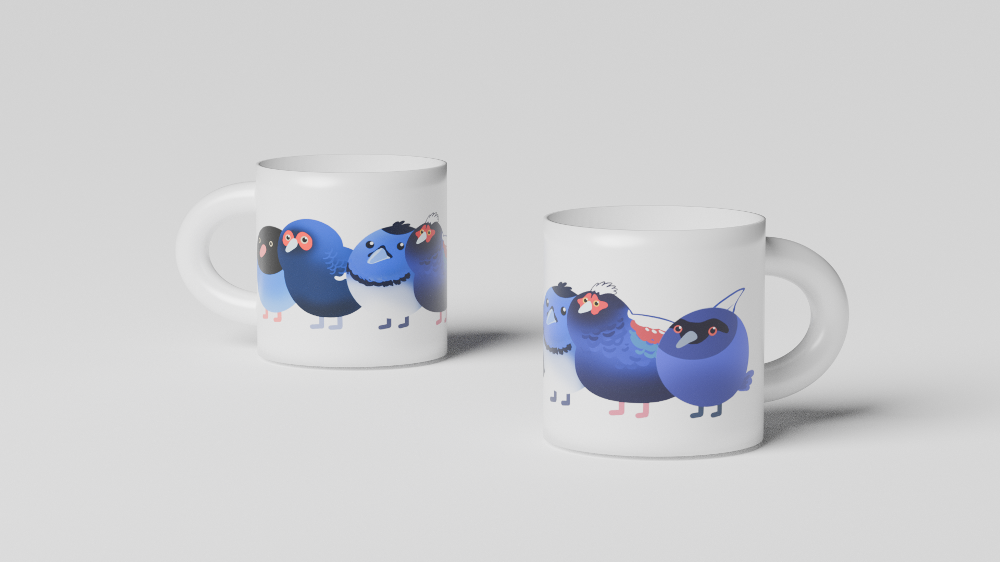
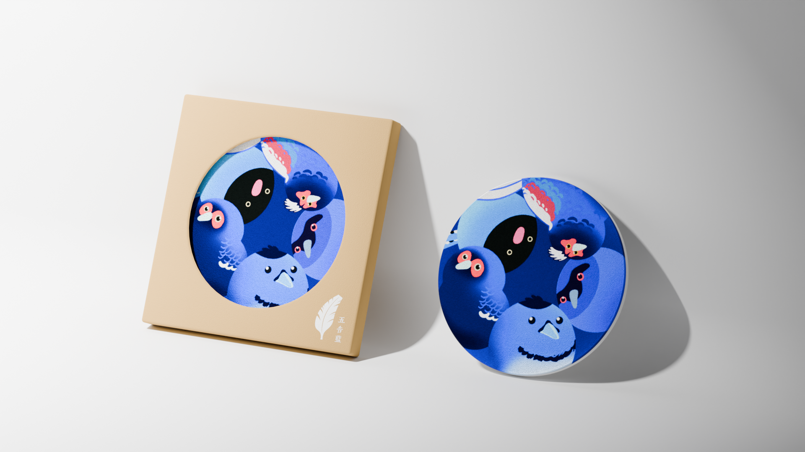
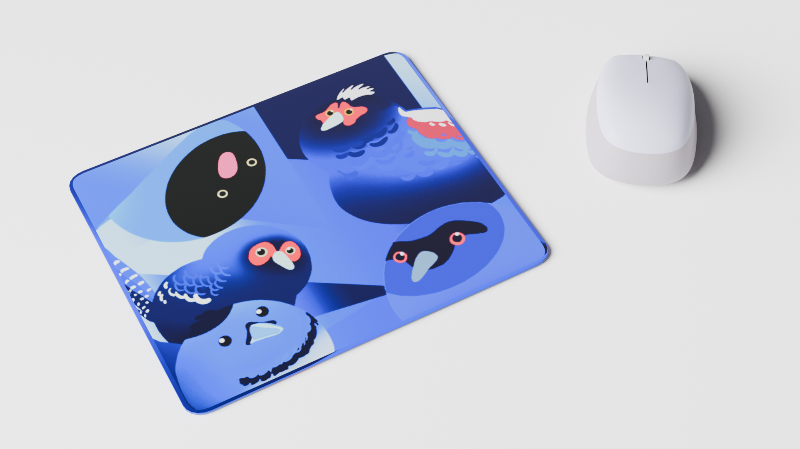
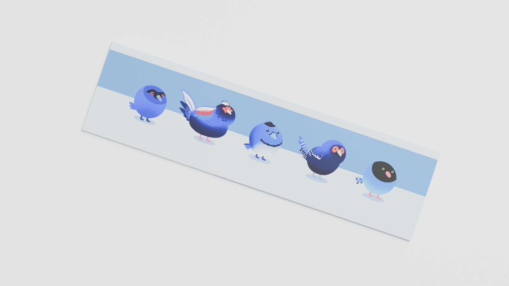

GRAPHIC DESIGN · 2025
五告藍
Wǔ Gaò Lán
Wǔ Gaò Lán
以台灣藍鵲、藍腹鷴、黑枕藍鶲、紫嘯鶇、帝雉等五種台灣特有藍羽鳥類作為核心圖像， 提煉各自的羽翼紋理與姿態，與台灣地圖形象結合轉化為具辨識性的品牌符號。
色彩系統以藍色羽毛深淺藍調為主軸， 傳遞自然生態的典雅氣質，同時兼顧文創商品的市場適用性。

將鳥類羽紋以環繞方式延伸至杯身，
高溫陶瓷轉印，兼顧美觀與耐用性。

將五隻鳥以環繞方式轉印在杯墊上。

以沉靜的藍色調為基底，結合洗鍊的幾何線條與圓潤的鳥類意象。

清爽的藍白雙色橫幅設計，質地輕柔透氣。